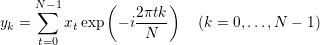
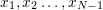
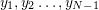
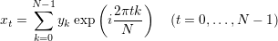
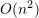
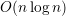

module Fourier:sig..end
val pi : floatval dft_aux : float -> Complex.t list -> Complex.t listdft and idft.val dft : Complex.t list -> Complex.t list
where  are time-domain data points,  are frequency-domain data points.val idft : Complex.t list -> Complex.t list
val fft_aux : float -> Complex.t list -> Complex.t listfft and ifft.val fft : Complex.t list -> Complex.t listdft takes  time, but fft takes  time!val ifft : Complex.t list -> Complex.t listidft takes time, but ifft takes time!